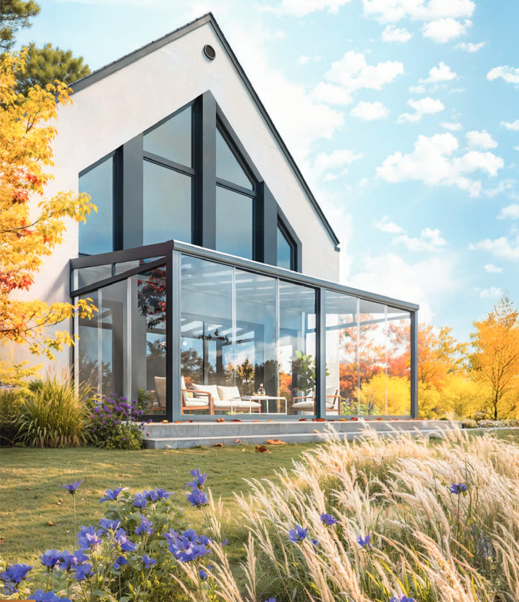
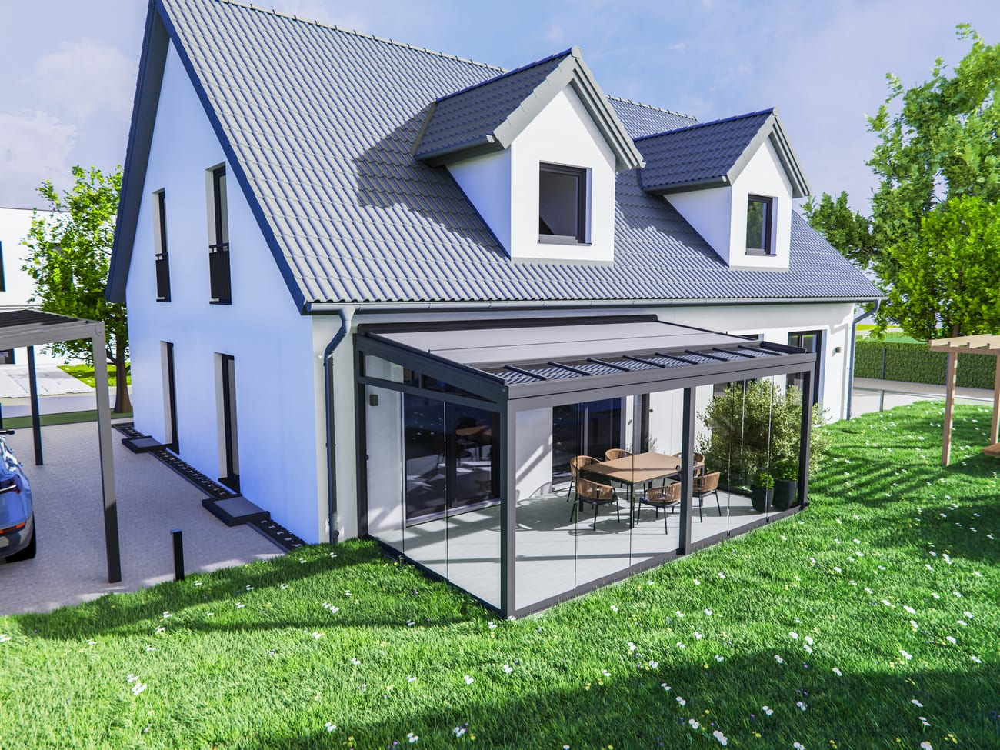

Ein Kaltwintergarten aus Aluminium und Glas verlängert Ihre Terrassensaison spürbar: Ein wettergeschützter, lichtdurchfluteter Raum, der ohne Heizung auskommt und sich harmonisch an Ihr Haus anfügt.
Ideal als überdachter Sitzbereich, Schutzraum für Pflanzen oder als lichter Übergang zwischen Haus und Garten. Eingedeckt wird mit 8- oder 10-mm-Verbundsicherheitsglas oder 16-mm-Stegplatten; mit rahmenlosen Glas-Schiebewänden lässt sich der Raum an schönen Tagen weit öffnen und bei Wind und Kälte wieder schließen. Wir planen und fertigen Ihren Kaltwintergarten maßgenau.

Jede Anlage planen wir individuell – das sind gängige Ausbaustufen.
Direkter Anschluss an die Fassade.
Großzügige Öffnung zur Terrasse.
Beschattung für heiße Tage.
LED-Technik für den Abend.
Die beliebtesten Standardfarben – jede weitere RAL-Farbe ist auf Anfrage möglich.
Ihre Auswahl: Anthrazit (RAL 7016) · weitere RAL-Farben auf Anfrage.
Beispielhafte Ausführungen. Klicken Sie auf ein Bild zum Vergrößern.


Wie lange ein Kaltwintergarten schön bleibt, entscheidet das Material. Wir arbeiten ausschließlich mit hochwertigem Aluminium und geprüftem Sicherheitsglas – kein Kompromiss bei Substanz und Sicherheit.
Schreiben Sie uns kurz Ihr Vorhaben – wir melden uns innerhalb von 24 Stunden.
Wir haben Ihre Angaben erhalten und melden uns innerhalb von 24 Stunden bei Ihnen.
Sie möchten sofort sprechen?
📞 0156 79818872
Lieber selbst zusammenstellen?Stellen Sie Ihr Wunschprodukt im Konfigurator zusammen und erhalten Sie ein individuelles Angebot.
Jetzt konfigurieren →